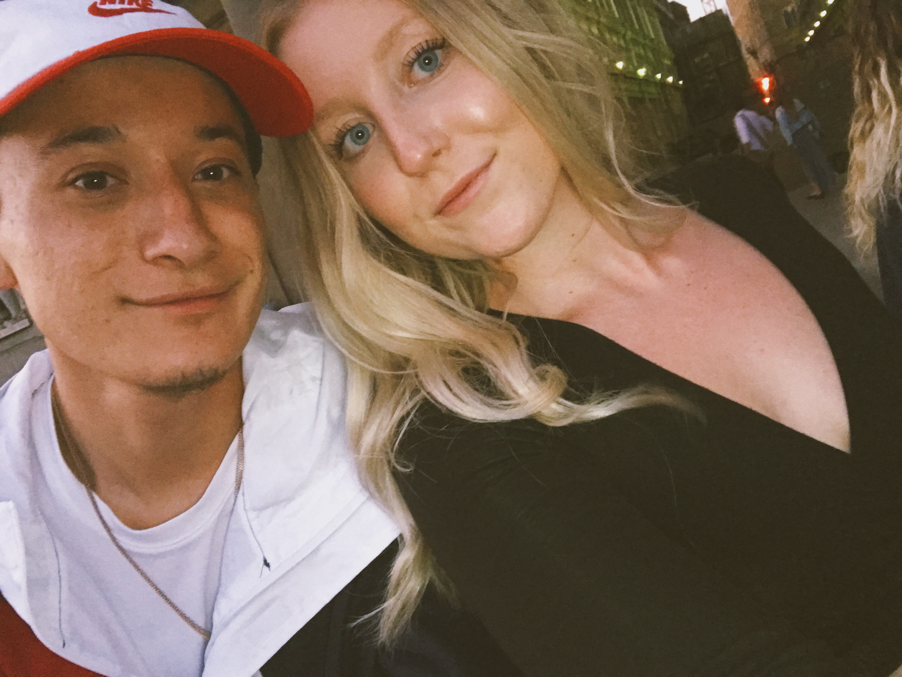
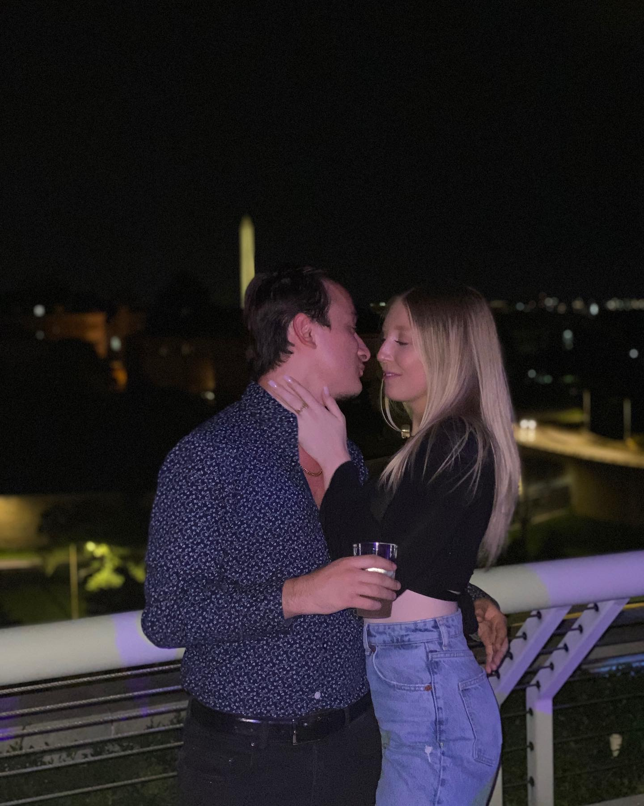
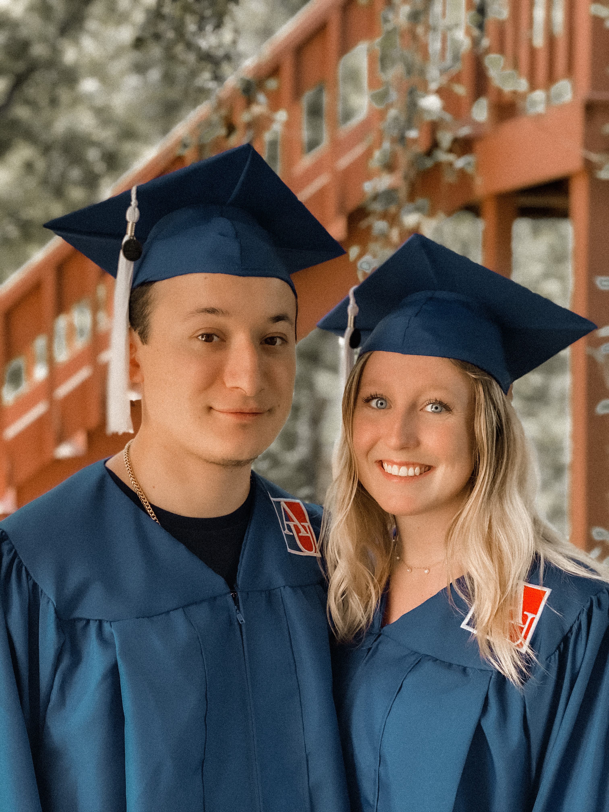
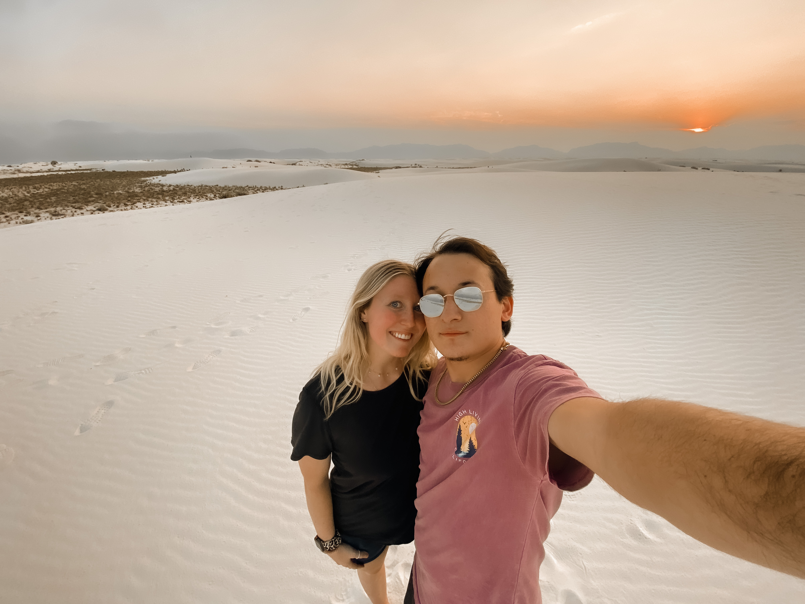
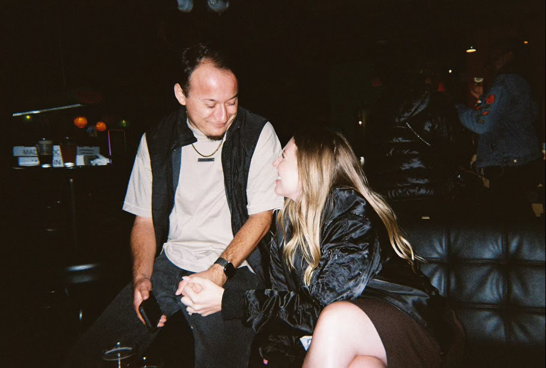
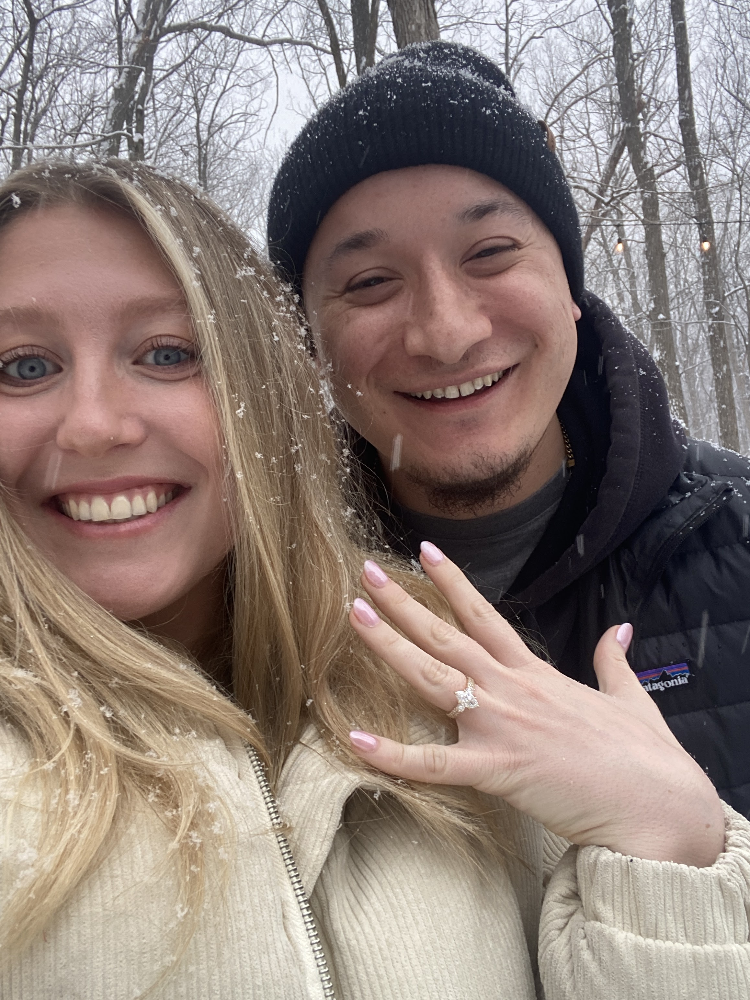
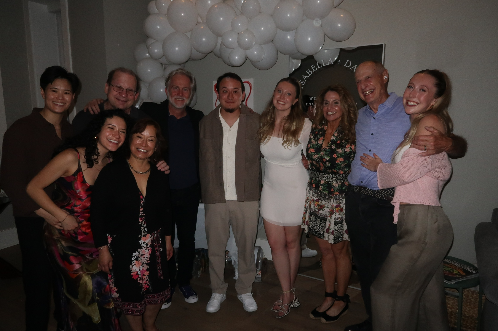

Florence, Italy — 2018
Isabella and David's story began in the fall of 2018, when the two found themselves among a group of students embarking on a semester abroad in Madrid, Spain. What started as a friendship forged over new cities, unfamiliar menus, and the particular magic of being far from home quickly became something more. Together, they wandered through the streets of Madrid, Italy, and Greece, and discovered that the best part of any adventure was simply being in it together. Florence, as it happens, was where they took their very first photo — a small and unassuming moment that neither of them could have known would become the beginning of everything.

Washington, D.C.
When the semester ended, so did any notion of going their separate ways. As luck — or perhaps fate — would have it, both Isabella and David were on the same flight back to the US, and they returned home to the same city, the same friend group, and, before long, the same house on Arizona Avenue. Their college years were spent building a life side by side: sharing meals, celebrating milestones, and growing up together in a city that very much felt like their own.

Graduation Day, Washington, D.C.
They graduated college together in Washington, D.C., in the spring of 2020 — a year that brought its own particular set of challenges as the world quietly closed itself off. Rather than retreat, they leaned in. Isabella and David moved into their first apartment together in Van Ness, D.C., and made a home out of what could have been a very uncertain time. For four years, that apartment held birthday dinners and lazy Sunday mornings, quiet evenings and big celebrations - the full, beautiful, ordinary texture of a life being built together.

White Sands National Park
As the world reopened, so did their sense of adventure. The two have since traveled widely and joyfully — to places all around Mexico, Jamaica, Costa Rica, and from coast to coast across the United States. Among all of their travels, their cross-country road trip remains one of their most cherished shared memories, and they can't wait for a lifetime of continuing to explore the world together.

Washington, D.C.
Back in D.C., life continued to evolve. New jobs, new chapters, and eventually a new neighborhood — the two recently made the move to Mount Vernon Triangle, where they have happily settled into their new apartment and fully intend to stay for quite some time. Through every transition, they have remained each other's steadiest source of support, laughter, and home.

Engaged — February 2025
In February 2025, David whisked Isabella away for Valentine's Day to a cozy cabin tucked in the mountains along the Pennsylvania-Maryland border. After an evening of grilled steaks, exchanged gifts, and a glass or two of wine by the fire, David got down on one knee and asked Isabella to marry him. She said yes. The next morning, snow fell softly around the cabin, and the two found themselves in their own private snow globe — quiet, joyful, and entirely theirs. It was, by every measure, perfect.

Engagement Party, Spring 2025
That spring, Isabella and David were overjoyed to celebrate their engagement surrounded by the friends and family who have loved and cheered them on from the very beginning. Now, with a wedding on the horizon, they are more excited than ever for what comes next — and so glad to be sharing it with all of you.
September 5, 2026 · Scottsdale, Arizona